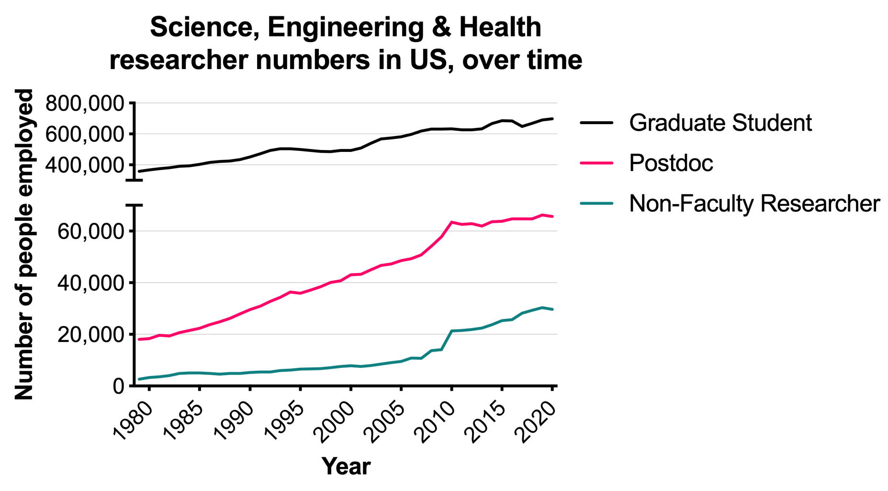
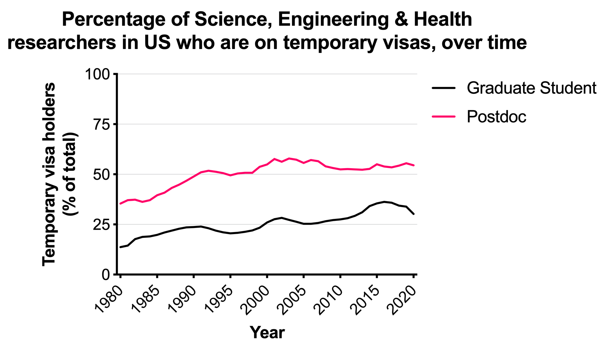
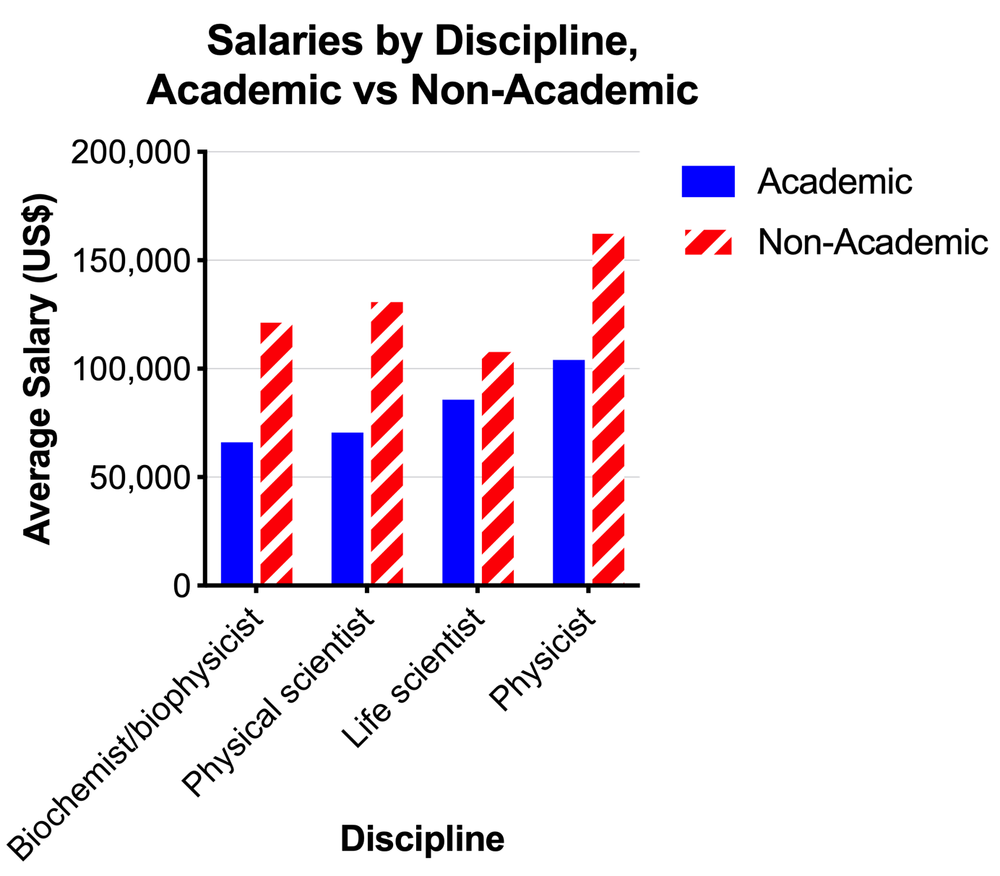
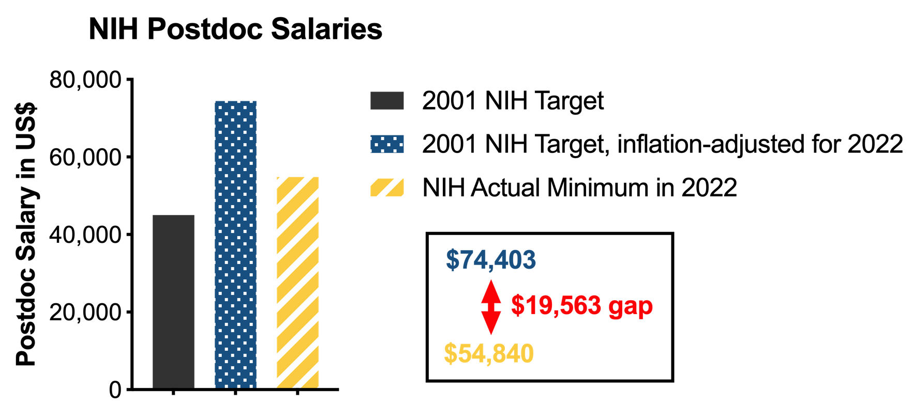
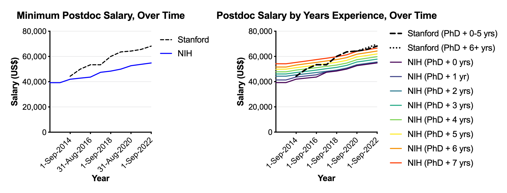
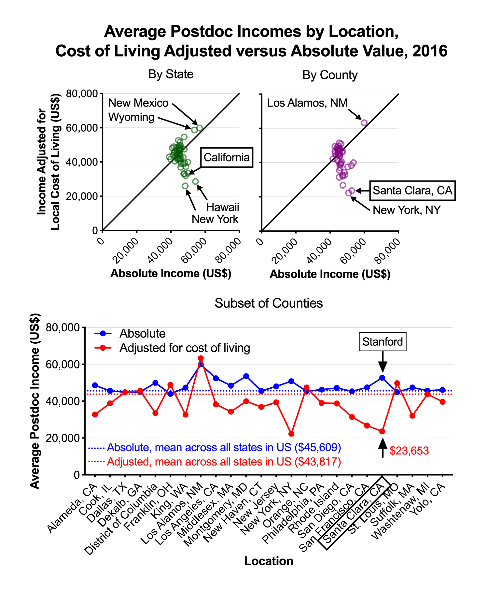
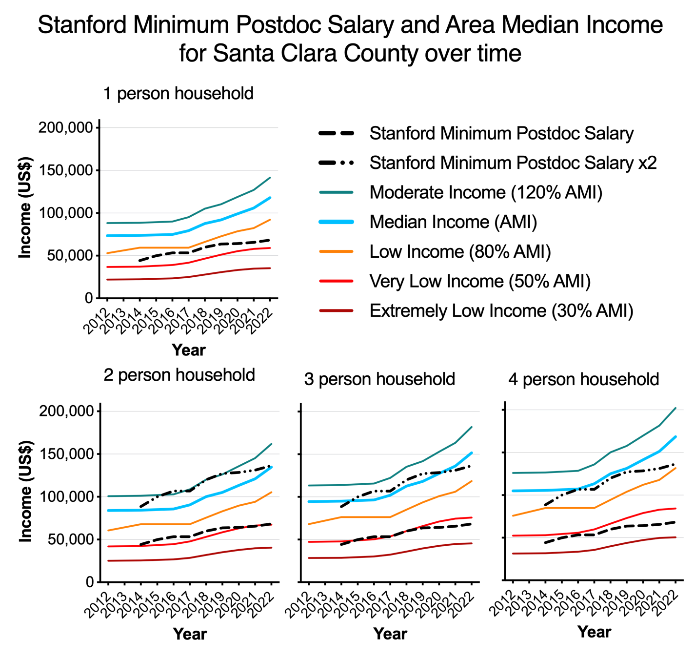

Competitive Landscape
Opportunities for Early Career Researchers: Competitive Landscape for Postdocs
Introduction
This section of the Report lays out general trends and figures concerning the postdoctoral workforce, firstly in the United States and then at Stanford University specifically. We draw out key points from the available data, including: in the last ten years, the postdoc population has largely stopped growing while the number of doctorate-holding non-faculty researchers has continued to rise; more than half of postdocs are on temporary visas; postdocs in academia are underpaid; postdoctoral training is required for tenure-track jobs (of which there are few) but not required for non-academic jobs; postdocs at Stanford are paid more than postdocs at many other locations but the cost of living around Stanford is much higher than at most other locations; the Stanford Postdoc Minimum Salary has not kept pace with inflation in recent years; particular groups of postdocs at Stanford are most affected by financial pressures, such as those with dependents; postdocs at Stanford have several avenues for representation within the University but continue to be overlooked.
The data in this section are drawn from source documents produced and published by: the federal government, such as the Bureau of Labor Statistics, the National Academies, National Science Foundation, and National Institutes of Health; state and local governments, such as the California Department of Housing and Community Development; academic researchers and academic journals, whose reports are often based on national or international surveys of postdocs; and, reporting by various media outlets, including The Stanford Daily.
Postdocs in the US
Changing Workforce Demographics
Postdocs are a large and critical part of the US academic research ecosystem. In April 2022, the National Science Foundation estimated that there were more than 65,000 academic postdocs working in the United States as of 2020 in the fields of Science, Engineering, and Health.1 This may be a substantial underestimate due to inconsistent job titles across or within institutions.2 The number of Postdoctoral appointees in the US increased steadily between 1980 and 2005, then rose sharply between 2005 and 2010, before largely leveling off between 2010 and 2020 (Figure 1). The number of doctorate-holding Non-Faculty Researchers also increased sharply in the two years before 2010 and have since risen more quickly than the numbers of Postdocs. The growth in Non-Faculty Researchers may represent Postdocs transitioning into staff researcher roles or teaching-focused roles.

The percentage of both Graduate Students and Postdoctoral appointees who are temporary visa holders (i.e. they are not US citizens or permanent residents) has increased since 1980 (Figure 2). For the past 20 years (2000 to 2020), a clear majority of Postdocs working in the United States have been on temporary visas.

Postdoc subpopulations within different fields of study have grown at different rates, with those fields with fewer postdocs growing most rapidly. For instance, between 2000 and 2008, the number of engineering and social sciences postdocs increased by 64% and 32%, respectively, whereas in life sciences and physical sciences postdoc numbers increased by 22% and 10%, respectively.3,4 Pursuing a postdoc is now a very common career choice for recipients of science and engineering doctorates. From 2009 to 2018, 45.0% of physical sciences and engineering doctoral recipients and 64.8% of life sciences doctoral recipients took postdoctoral employment upon graduation.5 Most postdocs (70-80%) were employed in the academic sector, as opposed to in industry or government sectors. Of those who started a postdoc in academia, one third of them (33-35%) worked in industry 5-6 years later, while more than half (57-62%) stayed in academia, although only 25-33% were in tenure-track positions. Of those who started a postdoc in industry, 65-84% were still in industry 5-6 years later.
Doctorate-holding Non-Faculty Researchers, a group that does not include postdocs, are more numerous than ever and are likely to experience low job security. There are minimal data available on the employment conditions of doctorate-holding Non-Faculty Researchers, particularly in comparison to Postdocs. It is not clear, for instance, what proportion of Non-Faculty Researchers are in permanent staff scientist positions or on short-term research contracts. Nor is it clear whether or in what way the work performed by Non-Faculty Researchers differs from that performed by Postdocs. We also do not know the immigration status of these workers. Research has shown that the salaries of postdocs are significantly impacted by their precise job title.6 Non-Faculty Researchers may in reality represent a Postdoc by another name. More information is needed on the rapidly growing Non-Faculty Researcher population.
Non-tenure track positions provide little job security. The proportion of non-tenure track full-time faculty increased from 8.7% to 27.1% at public doctoral universities and from 12.5% to 30.0% at private nonprofit doctoral universities in the decade between 2008-2018, indicating an increase in contingency and decrease in stability for the academic workforce.7 In other words, the tenure track roles most postdocs are pursuing are being removed from the workforce and the lost labor is being performed by those with little stability. Only about a fifth (22%) of contracts for non-tenure track faculty are multi-year and nearly half (47.2%) are for less than 12 months.8 As examples, contingent faculty and adjunct professors, two types of non-tenure track faculty, have been reported to face substantial difficulties up to and including struggling with homelessness.9–11
Short contracts and low pay for teaching-related roles lead to high staff turnover. Increasing reliance on contingent faculty to teach creates instability in the academic workforce. Each year between 2015 and 2020, at least a quarter of lecturers within the University of California system did not return to teach.12 Low compensation coupled with uncertain, short-term contracts push the skilled PhD workforce that fills teaching positions at many major universities away from academia. This churn in the teaching workforce may also negatively affect student learning outcomes by decreasing teaching continuity. At present, it is unclear what proportion of Postdocs transition to stable long-term employment versus continuing in unstable short-term positions.
Postdocs are critical for educational outcomes of graduate students. Postdocs perform an integral role in the research and education missions of the University. Postdocs, along with graduate student workers, senior scientists, and research associates, serve as the skilled workforce that carries out the research grants obtained by faculty who serve as principal investigators. Postdocs also bring in their own funding through fellowships and career development grants. Postdocs are indispensable in graduate education, as peer reviewed research has demonstrated that postdoc engagement is a better predictor of graduate student skill development than PI engagement.13 Yet postdoctoral researchers are also trainees themselves, seeking new skills, entering new fields, and seeking career mentorship while developing an independent research program.
In the contemporary research environment, institutional forces (i.e. funding agencies) have recognized postdoctoral training as a defined segment of one’s career that can last as long as graduate training. A majority of postdocs at Stanford are in the School of Medicine, where a typical pathway towards an academic career might involve applying for an individual postdoctoral fellowship (e.g. NIH F32, or various similar private fellowships)14–17 for three years of funding followed by a career transition award (e.g. NIH K99/R00 or others)18,19 for two more years as a postdoc before transitioning to an independent role; a total of five or more years as a postdoc. This lengthy training period and the instability resulting from reliance on short-term contracts coincides with a period when postdoctoral scholars are seeking stability to plan for families and retirement. Despite the potential length of postdoctoral training, the position is also inherently transient. At Stanford, postdocs have a five year time limit. However, this time limit is usually spanned with short term contracts of one or two years, resulting in instability in both the short and long term. The longstanding precarity associated with the postdoctoral position came to a crisis during the COVID-19 pandemic when pressures pushed postdocs out of the academic workforce.20–23
Higher Education Does Not Mean Higher Pay
Academia pays less than non-academia. For professional research scientists, the annual mean wage in academic employment is far lower than outside of academia across all fields surveyed by the U.S. Bureau of Labor Statistics (BLS), including biochemists and biophysicists ($66,060 vs. $121,310), physical scientists ($70,580 vs. $130,680), life scientists ($85,770 vs. $107,740), and physicists ($104,050 vs. $162,240) (Figure 3).24 These numbers from the BLS are echoed in the results from various nation-wide or world-wide surveys of postdocs in recent years, which have concluded that postdocs are an undervalued workforce,25 that there is high disenchantment with working as a postdoc,26 and that the stagnating salaries of postdocs may push potential future postdocs off the academic career track.27 Furthermore, the challenging postdoctoral period comes after the already-challenging graduate school period, during which time researchers may be paid below the living wage and face food insecurity.28,29 Unsurprisingly, immediate financial concerns, such as supporting a family or paying off student loans or saving for retirement, may prevent a researcher from pursuing a postdoc. Given these challenges, those who are actually able to undertake a postdoc are likely to represent individuals who already come from a certain level of privilege.

National funding bodies in the United States have known for many years that academic researchers, including postdocs, are underpaid. In the year 2000, the U.S. National Research Council called for an increase in stipends for researchers. (For instance: “Recommendation 5-4. Stipends and other forms of compensation for those in training should be based on education and experience and should be regularly adjusted to reflect changes in the cost of living.” in Chapter 5: Crosscutting Issues in Research Training, in ref30.) In response, the National Institutes of Health (NIH) in 2001 set a target annual stipend of $45,000 for entry-level postdocs and planned to increase then-current stipends by 10 to 12% over the following few years to reach that target before subsequently maintaining the real value of stipends by annual cost-of-living adjustments.31 Starting from $45,000 in September 2001 and adjusted for national average inflation, this target minimum annual postdoc stipend would now (in September 2022) be equivalent to $74,403.32 However, the current NIH minimum postdoc salary is just $54,840 (Figure 4).33 This is a gap of almost $20,000. Notably, these numbers only reflect national salary minimums and do not take into account local cost of living differences. In the case of Stanford University and the San Francisco Bay Area, the local cost of living is substantially higher than for most of the rest of the country, as is detailed below.

Pursuing an academic postdoc leads to a loss in average lifetime earnings.34 The academic postdoctoral timeline is longer than in non-academic sectors and academic postdoctoral researchers later receive lower salaries, resulting in an overall loss in lifetime earnings (of $3,730 per year of postdoctoral training over a 30 year post-PhD career). Academic postdocs tended to be longer in duration across fields, with an average length of 1.3 - 1.6 years in industry compared with 2.4 - 3.3 years for academic postdoc positions.5 Analysis of salary disaggregated across sectors of employment at year 5-6 shows that those who initially pursued academic postdocs have lower salaries than their peers regardless of where they are eventually employed, except for in tenure-track positions where they are at the median. Meanwhile, those who worked as postdocs in the government sector immediately following receipt of their doctorates had relatively higher salaries, even in the broadly low-paying academic fields. For those who ended up in permanent industry positions, a government postdoc led to a salary advantage of $7,350 over an academic postdoc.5 For career mobility and long-term salary gains, an academic postdoc compares unfavorably to a government postdoc.
Even late-career, world-leading researchers continue to be deeply affected by the career instability and low wages of academia. Prof. Emmanuelle Charpentier worked at nine institutions in 25 years, an average of less than three years per institution, while performing the work that would earn her the Nobel Prize in Chemistry.35 Dr. Katalin Karikó spent years in contingent roles as a doctorate-holding non-faculty researcher pioneering work on mRNA that gave rise to coronavirus vaccines that have helped fight against the global pandemic.36 Dr Jeffery Hall, who received the 2017 Nobel Prize in Physiology or Medicine for his work on circadian rhythms, left science in part because of his disenchantment with the difficulties in obtaining scientific funding.37 Leon Lederman sold his Nobel Prize at the end of his life to pay for health care costs.38 Job instability and low wages affect many in academia, including postdocs.
Advanced Training for Limited Academic Roles
Many postdocs are motivated by the desire to train in cutting-edge research with expert mentors, and in many fields, completing a postdoc is required for pursuing an academic career. Indeed, when asked, a majority of postdocs cite academic research positions as a major career goal.39 However, there are far fewer tenure-track positions available than there are postdocs; only about a fifth of postdocs will go on to tenure-track jobs.5
There have been long standing concerns over the treatment of postdocs within the academic research ecosystem. In 2000, the National Academies published a report on how to enhance the postdoctoral experience, citing large variability of the postdoc experience with particular concerns over poor guidance or mentoring; little opportunity for growth towards independence; and mentors, institutions, and funding bodies not assigning postdocs the status, recognition, and compensation that are commensurate with their skills and contributions.40 More than ten years later, one commentator, the chief executive officer of the American Association for the Advancement of Science, lamented that none of the recommendations from the National Academies’ 2000 report had been implemented on a broad scale.41 Another National Academies report published in 2014 again expressed concerns that the experience of postdocs is highly variable and in many cases is far from the ideal. (“2: The Disconnect Between the Ideal and Reality” in ref4.) In particular, the vast imbalance between the large number of postdocs and the small number of available tenure-track faculty positions leads to: extra long postdoctoral periods (>5 years) and sometimes the same person completing multiple postdocs, postdocs taking jobs for which postdoc training is not required, or postdocs subsequently leaving research altogether.
Despite what seems to be an oversupply of postdocs in the academic system, principal investigators have complained of difficulties in recruiting postdocs, both back in 2015 and in the wake of the COVID-19 pandemic.42,43 These hiring difficulties have led some leaders in academia to acknowledge the plight of postdocs and suggest recommendations for how to fix the system.44 These recommendations largely echo the ignored calls of the past 20 years.
Worryingly for the 75-80% postdocs who do not obtain a tenure-track position, pursuing a postdoc does not necessarily prepare you for a career outside of academia. Several studies have found that the skills postdocs learn in academia are not necessarily sought by employers outside of academia.45 Therefore, despite having undertaken advanced training, postdocs face uncertain prospects for their future careers.46
One issue that has compounded this uncertainty is the lack of reliable and available data on the career outcomes of postdocs. Within the field of biomedicine, an international group of prominent institutions, called the Coalition for Next Generation Life Science, sought to address this lack in 2017 by announcing a data initiative to track the career outcomes of graduate students and postdocs, which began in 2018.47 Conspicuously absent from this Coalition are the two largest employers of postdocs in the United States – Harvard and Stanford Universities. Data collection efforts to track postdoc career outcomes are long overdue.
A recent analysis of the hiring dynamics for university faculty across the United States revealed a number of potentially concerning details. This 2022 study revealed an intense “prestige hierarchy” in the production of faculty.48 A minority of universities produce an outsized proportion of eventual faculty. Only 11% of US faculty hold doctorates from international universities. For faculty who received their doctorate within the US, just 20.4% of universities produced 80% of the faculty. Moreover, nearly 14% of faculty received their PhDs at one of five institutions – University of California Berkeley, Harvard University, University of Michigan, University of Wisconsin-Madison, and Stanford University. While postdoctoral training was not considered in the analysis, these results certainly have implications for those pursuing a career as faculty within academia. As a result of the current lack of data on postdoc career outcomes, it is unclear the extent to which completing a postdoc at Stanford contributes to success (or otherwise) in gaining a faculty position. Depending on a researcher’s training background, these hiring dynamics may lower the odds of obtaining a faculty position. The existing data indicate that cities that produce the highest proportion of tenure track faculty are also associated with higher cost of living, while postdoctoral salaries fail to account for disparities in cost of living.49
Postdocs at Stanford
With 2400 postdocs, Stanford’s share of the total US postdoc population is approximately 4%. (2400 / 65,000 x 100 = 3.69%) Given that there are some 280 R1 and R2 institutions in the US,44 this is a very large fraction for a single institution to hold. Stanford was one of the first institutions to have a formal postdoctoral association, with the Stanford University Postdoctoral Association founded in 1998. At that time, there were 1200 postdocs at Stanford. As of 2023, there are nearly 2500 postdocs at Stanford. The postdoctoral association is now known as SURPAS. SURPAS aims to represent all postdocs at Stanford. SURPAS is run entirely by volunteers who are all postdocs at Stanford. SURPAS receives funding from the University via the Office of Postdoctoral Affairs.
Prestige Does Not Prevent Poverty
Stanford University pays postdocs more than the minimum postdoc salary set by the National Institutes of Health (NIH). This has been the case since at least 2014, and for each year between 2018 and 2022 Stanford’s Postdoc Minimum Salary exceeded the NIH’s by at least $11,500 (Figure 5, left panel, and Appendix D, Table 5). This is a substantial difference, representing at least 22% higher salary compared to the NIH minimum each year between 2018 and 2022.
However, whereas the NIH postdoc salary increases for each additional year of postdoc experience, Stanford’s postdoc salary does not increase at all for 0 to 5 years of postdoc experience (Figure 5, right panel, and Appendix D, Table 7). A postdoc who started at Stanford in 2018 fresh out of their PhD (PhD + 0 years experience) and received the Stanford minimum salary was $11,568 (22%) better off than the NIH minimum salary, but by their fifth year at Stanford on the minimum salary (2022; PhD + 5 years experience) they were only $6246 (10%) better off than the NIH minimum. A survey of postdocs at Stanford conducted by the Stanford Postdoc Association (SURPAS) Leadership Team in December 2021 found that 53% of respondents were being paid at the minimum salary and an additional 30% were on less than $72,000 per year (equivalent to 110% of the minimum salary; see SURPAS Benefits and Affordability Survey (Winter 2021/22)). Increased transparency around Stanford postdoc remuneration across different years of experience, different fields/departments, different funding mechanisms, and different Principal Investigators would enable a deeper understanding of the heterogeneity (or homogeneity) of postdoc personal finances.

The cost of living around Stanford is extremely high relative to other locations in the US and this may be one reason that Stanford’s Minimum Postdoc Salary is higher than that of the NIH. A 2018 analysis of data drawn from a 2016 US national postdoc survey put postdoc salaries into the context of the local cost of living across a variety of locations around the US (Figure 6).39 Postdocs at Stanford, despite receiving near to the highest absolute salaries, were placed among the lowest in the country in terms of real wages (see “Santa Clara, CA” in Figure 6). (Stanford University is an unincorporated area within Santa Clara County.) Notably, in the year of this national survey (2016) Stanford’s Minimum Postdoc Salary was actually 22% higher than the NIH Minimum (Appendix D, Table 5), indicating that even with a salary substantially exceeding the NIH Minimum Stanford’s postdocs remain very financially disadvantaged compared to postdocs living in almost every other location within the US.

Furthermore, increases to the Stanford Postdoc Minimum Salary over the past several years have not kept pace with inflation. Postdocs at Stanford received a 2% and 4% year-on-year increase to the Minimum Salary in the past two years (academic years 2020/21 to 2021/22 and 2021/22 to 2022/23, respectively) (Appendix D, Table 1a). The Bureau of Labor Statistics reports that for the months August 2021 and August 2022 the 12-month percentage change in the Consumer Price Index (CPI) for the San Francisco-Oakland-Hayward, CA metropolitan area was 3.7% and 5.7%, respectively. Therefore, the Stanford Minimum Postdoc Salary has lagged CPI by 1.7% for each of the past two years, representing $2207 in lost purchasing power over those two years ($64,268 x 1.037 x 1.057 = $70,445 versus actual 2022 salary of $68,238).
A comparison of the Stanford Minimum Postdoc Salary with the Area Median Income (AMI) of Santa Clara County (in which Stanford University is located) similarly reveals that postdocs at Stanford, and certain groups in particular, are not well off (Figure 7). In 2022 in Santa Clara County, single-earner households of any size with a postdoc on the Stanford Postdoc Minimum Salary (Figure 7, black dashed line) were either Low or Very Low Income. A single-parent postdoc with any number of dependents was Very Low Income. Double-earner households with two postdocs on the Minimum Salary (Figure 7, black dot-dash line) without any dependents (“2 person household”) are at the 2022 Median Income but dip below it with one dependent and are close to Low Income with two dependents. (Postdocs may choose for their dependents to not be enrolled on their Stanford health insurance, for instance if their partner has access to alternative health insurance.) Based on health insurance enrollment, at least 43% of postdocs at Stanford have dependents, which means that a sizable portion of the postdoc population exists within a household of more than one person and may need to cover more than just their own personal expenses on their postdoc salary.
The federally-funded housing assistance program, Housing Choice Voucher (Section 8), organized through the Santa Clara County Housing Authority is available to households whose income falls below the Very Low Income level (50% AMI) (Figure 7, bright red line).51 In 2022, this level was $67,400 for a 2-person household and $75,850 for a 3-person household. The 2022 Stanford Minimum Postdoc Salary was $68,238. This means that a postdoc with two or more dependents, who was the sole income-earner and was on the Stanford Minimum Postdoc Salary, would have been eligible for federal housing assistance. A postdoc in the same situation but with only one dependent earned just $838 too much to qualify for federal housing assistance. This rental assistance program allows for recipients to pay just 30% of their gross income on rent, with the remainder paid for by the program.
Regardless of household size, over the past three years (2019-2022) postdocs at Stanford have lost ground relative to the local Area Median Income levels (Figure 7). Since 2019, increases in the Stanford Minimum Postdoc Salary have not kept pace with increases in the AMI for Santa Clara County, leading to a substantial decrease in the real wages of postdocs at Stanford. A Minimum Postdoc Salary of $81,000 in 2022 would return postdocs at Stanford to the pre-2019 relative income level.

The Reality of Postdoc Financial Challenges
Low salaries for postdocs at Stanford lead to very real financial hardships, up to and including struggling to meet basic needs. Housing is likely to be the largest regular expense for postdocs at Stanford. The cost of housing in the San Francisco Bay Area is very high, with those areas closest to Stanford being at or close to the most expensive in the Bay.53 Average effective monthly rent in the City of San Jose, Santa Clara County, was $2,635 in the fourth quarter of 2022.54 Renters must earn $117,560 per year to afford the average effective monthly rent for a 2-bedroom apartment (the Stanford Minimum Postdoc Salary was $68,238 in 2022/23). The US Census also reported that the median gross rent for Santa Clara County between 2017-21 was $2,530.55 The U.S. federal Department of Housing and Urban Development (HUD) defines someone who spends more than 30% of their income on rent as Rent Burdened. For a postdoc on the Stanford Minimum Postdoc Salary in 2022/23, 30% of their pre-tax monthly salary is $1,706. ($68,238 / 12 * 0.30 = $1705.95) This is $929 less than the City of San Jose figure for average effective monthly rent in Q4 2022 and $824 less than the US Census figure for median gross rent in 2017-21. According to a December 2021 postdoc survey (see SURPAS Benefits and Affordability Survey (Winter 2021/22)), almost half of postdocs at Stanford (47%) pay more than $2000 per month for housing, making them Rent Burdened. Many postdocs at Stanford (25% or ~600 individuals) live with roommates. (“Roommates” does not include a partner or dependent/s.)
For postdocs with families, living with roommates is not likely to be an option. Some postdoc families make ends meet by having a partner who works in a higher paying field than academia; others separate geographically from their family for the duration of their postdoc; still others take out loans to join the postdoctoral workforce (see Stanford Latinx Postdoc Association Survey (Fall 2022).56
Postdocs are eligible to apply for Stanford on-campus housing. However, because postdocs are classified as “non-matriculated students”, they have no priority and no guarantee of receiving an offer for on-campus housing. (Direct communications with a representative from Stanford Residential & Dining Enterprises (https://rde.stanford.edu/), March 2023.) In reality, this meant that very few, if any, postdocs received on-campus housing. This was the case until 2021 when the COVID-19 pandemic led to a huge decrease in the demand for on-campus housing from (matriculated) students. At this point, a number of postdocs were able to access on-campus housing. However, when (matriculated) students returned to campus in Fall 2022, some postdocs were evicted from on-campus housing with only three weeks notice.57 Shortly afterwards, Stanford announced the purchase of additional housing near campus where postdocs are to have the highest priority.58 The addition of postdoc-specific Stanford housing is extremely welcome and long awaited amongst the postdoc community. However, concerns remain over the affordability of these units, given prevailing market rates and current postdoc salaries (see Stanford Chinese Postdoc Association Housing Costs Letter (2022). Even with the recently added 759 postdoc-specific units, the majority of Stanford’s more than 2400 postdocs will still live off campus and need to find housing in the Bay Area.
Stanford does not provide financial assistance for postdocs relocating to Stanford. The cost of relocation expenses raises a barrier to economically disadvantaged postdocs joining the academic workforce (see Stanford Latinx Postdoc Association Survey (Fall 2022). This initial period often comes with additional financial burdens on top of regular rent and utility bills, including paying for a security deposit, first and last month’s rent, and purchasing of furniture and other necessary items. Stanford has recently piloted a transitional housing program to provide a landing place for new postdocs moving to the Bay Area.59 These housing units, while fully furnished and not requiring a security deposit, are offered at market rates and are therefore expensive. At $2700 per month for a one-bedroom unit, this is almost half of a postdoc’s pre-tax monthly minimum salary. The transitional nature of this housing means the maximum length of stay is 4 months.
A significant number of postdocs at Stanford suffer from food insecurity. At a SURPAS Council meeting in late 2019, it was reported that nearly 10% of postdocs suffered from food insecurity. A subsequent survey of postdocs at Stanford in December 2021 bore this out, finding that more than one-third (36%) suffered from some level of food insecurity: either Occasionally (22.9%), Sometimes (7.6%) or Often (5.1%) (see SURPAS Benefits and Affordability Survey (Winter 2021/22)). There is a pop-up food pantry on campus that provides undergraduate and graduate students and their affiliates with additional food support at no cost.60 Postdocs avail themselves of this essential service too. However, as of January 2023, postdocs are no longer eligible to use this service.
Postdocs with dependents must contend with additional financial burdens. Health insurance and childcare for dependents represent major and essential expenses. During the COVID-19 pandemic, premiums to cover dependents on the postdoc health insurance plan increased by 60%. Following an outcry from postdocs (including the SURPAS Family Committee Letter (2020/21)), Stanford offered a mechanism by which these added health insurance costs would increase over the course of 12 months, rather than be incurred by postdocs with dependents immediately.1 At around the same time (February 2021), Stanford initiated three new financial aid programs for postdocs (Child Care Assistance Grant Program, Family Grant Program, Back-up Child Care Assistance (BUCA)) and expanded a fourth program (Emergency Grant in Aid).2 For childcare, Stanford offers an emergency relief fund to help offset its large cost.61 However, the maximum benefit from this fund is $5000 per year, while childcare costs can easily reach $2500 per month, meaning that this provision may only cover a sixth of total annual childcare costs. Suffice it to say, paying for only the essentials – housing, healthcare, childcare, and food – as a postdoc with dependents in the Bay Area is extremely difficult, if not impossible, on the Stanford Minimum Postdoc Salary, even after a postdoc maximizes targeted funding provisions from Stanford.
Representation and Advocacy on Campus
Stanford has an institutional postdoctoral office called the Office for Postdoctoral Affairs (OPA), which is focused entirely on assisting postdocs at Stanford.62 The OPA expanded its headcount in 2021 and now has 13 staff members. Many academic research institutions still lack such an office and postdocs at Stanford are very fortunate to have an office dedicated to them. (Only 36% (101 out of 280) of R1 and R2 institutions have a specific office dedicated to postdoc affairs. From ref44.) Research has shown that access to an institutional postdoctoral office is correlated with mitigation of some stress associated with darkened outlooks on future career opportunities for postdocs during the COVID-19 pandemic.63,64
Leaders of the Stanford postdoctoral association, SURPAS, meet regularly with OPA staff in order to advocate for improved conditions. SURPAS has a yearly operating budget composed of funds deposited from a line item in the OPA budget disbursed in Fall of each year. The Dean’s Office from the School of Medicine and the Vice Provost for Graduate Education and Postdoctoral Affairs also contribute funds to specific events, such as the Postdoc Symposium, Diversity Perspectives Seminar Series, or the Family Committee Fall Festival. Other than the yearly deposit from OPA, any additional funds must be applied for by the SURPAS Leadership Team. Consistently one of the largest single line item expenses on the SURPAS budget for the past decade has been the cost of buying drinks for a barbeque held by OPA during National Postdoc Appreciation Week in September, which typically takes place at the end of the SURPAS budget cycle.3
SURPAS Leadership also represents the needs of postdocs on the Provost’s Advisory Committee on Postdoctoral Affairs (PACPA). SURPAS co-chairs have a non-voting seat on both the university-wide Faculty Senate and the School of Medicine Faculty Senate. In addition to the SURPAS Leadership Team and SURPAS Council, which are the two elected representative bodies of the Stanford postdoctoral community, there are also several postdoctoral affinity groups that represent and seek to build community amongst postdocs with specific identities. At present (2023), these affinity groups are: the Stanford Black Postdoc Association (SBPA), the Stanford Latinx Postdoc Association (SLPA), LGBTQIA+ Postdocs, and the Stanford Chinese Postdoc Association (SCPA). These affinity groups are independent of SURPAS but frequently collaborate with SURPAS.
Postdoctoral issues have been raised with the University Administration over many years, including through various working groups of the University’s Long Range Planning of 2017/18.65 In 2017, organized postdocs at Stanford sounded a note of optimism following a meeting with senior University leadership figures at Stanford in expectation of a productive working relationship to address years of being treated as “second class citizens” within Stanford.66 However, postdocs at Stanford have continued to be overlooked. During the pandemic, postdocs received no institutional support in the form of funding extensions similar to the faculty tenure clock extension.67 Postdocs also received no communication from Stanford about their COVID-19 vaccine eligibility until April 26, 2021, eleven days after all Californians were eligible for vaccination and more than six weeks after postdocs became eligible as workers in the education sector.68
Conclusion
This section of the Report has laid out, in broad strokes, the system-wide situation of academic postdocs within the US and then specifically the situation of postdocs at Stanford. We have drawn from a wide range of reputable sources to synthesize some key throughlines: postdocs have been consistently undervalued and underpaid since the conception of the postdoc role; more than half of the postdocs in the US are on temporary visas; postdoc experiences vary widely and in the majority of cases do not lead to tenure-track positions; pursuing an academic postdoc is correlated with decreased average lifetime earnings; repeated calls over many years to improve conditions for postdocs, for instance by increasing pay and increasing structures for accountability, have not resulted in widespread changes.
The situation for postdocs at Stanford is both better and worse than the broader picture. Stanford pays its postdocs more than the NIH minimum. But postdocs at Stanford get paid less in real wages. They get paid less compared to postdocs living in other parts of the US (due to high local cost of living). They get paid less now compared to postdocs at Stanford several years ago (due to salaries not keeping up with inflation). They get paid less relative to their work experience the longer they remain a postdoc at Stanford (due to a flat salary structure). And they get paid less now compared to Stanford’s local Area Median Income (due to salaries not keeping up with local wages). This low salary is particularly challenging for certain groups of postdocs, including those with dependents, due to very high costs for housing, child care, and health insurance. Postdocs at Stanford have several avenues for representation within the University (unlike at many other institutions) but continue to be overlooked.
References
Footnotes
Email from postdocbenefits@stanford.edu on Oct 29, 2020 with the subject line “Important changes to dependent care premiums”, including a table detailing a discount on monthly premiums for dependent health insurance that would decrease each quarter to no discount by Oct 2021; email forwarded out again on Apr 21, 2021 (subject line “Reminder: Important changes to dependent care premiums”).↩︎
Email from postdocaffairs@stanford.edu on Feb 25, 2021 with the subject line “New Financial Aid Programs for Postdocs”.↩︎
From SURPAS Treasurer financial records of SURPAS expenses for years 2013-2022.↩︎